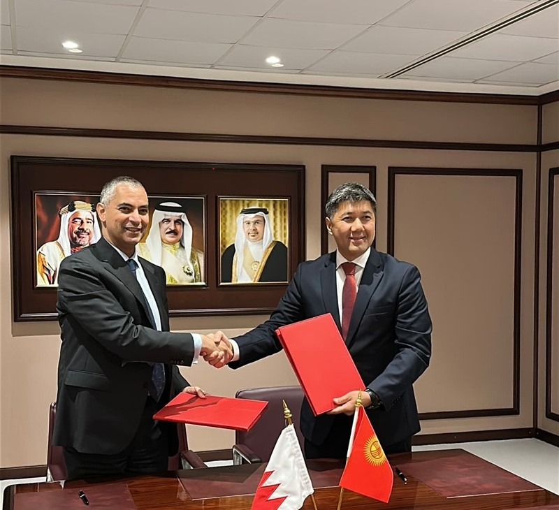
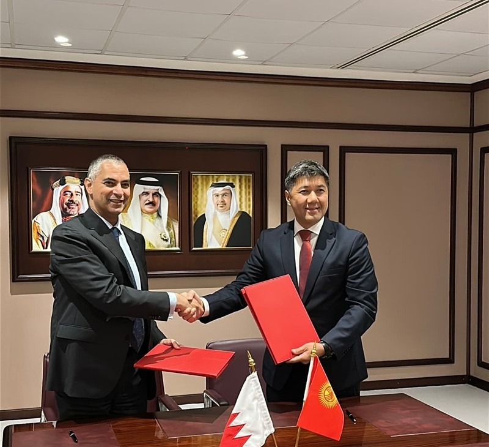
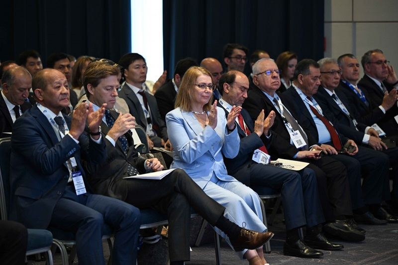
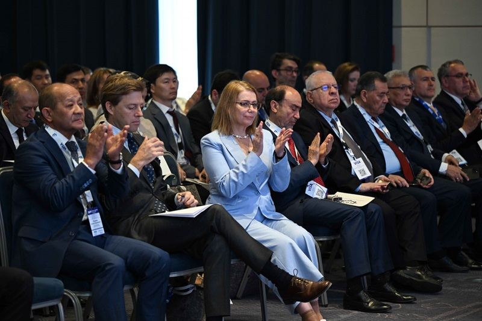
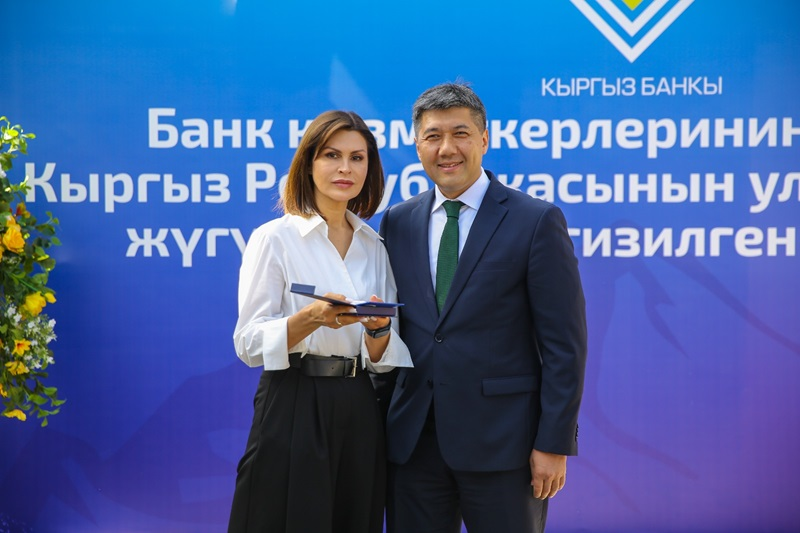
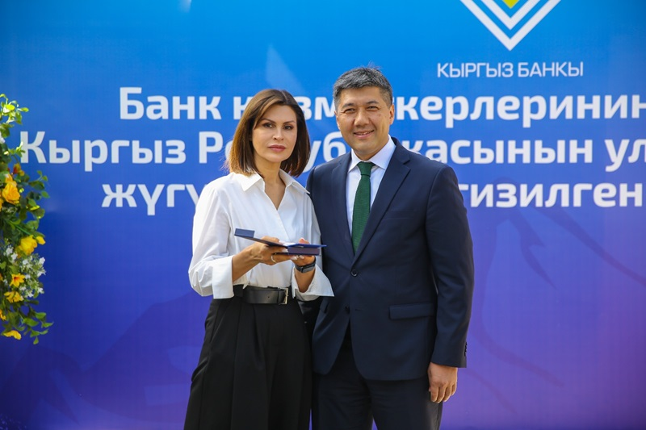
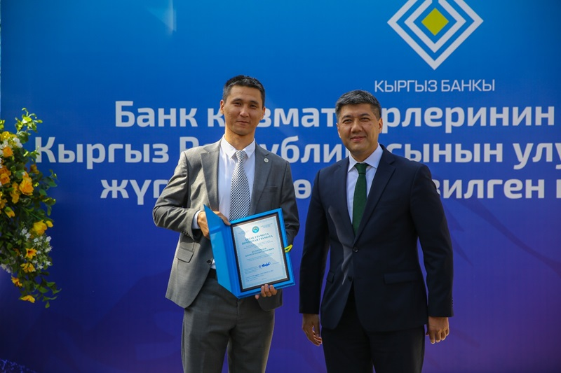
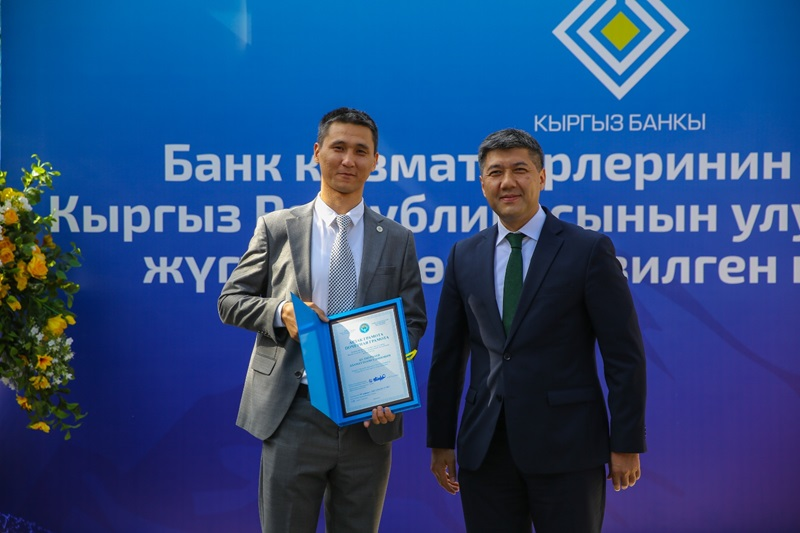
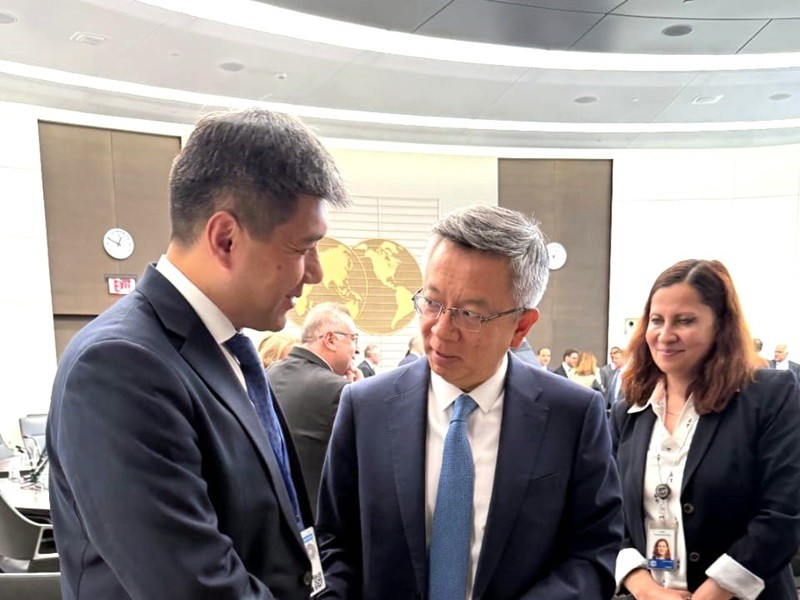
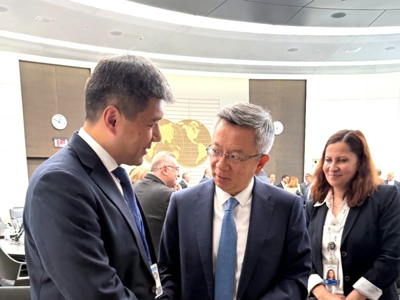

NATIONAL BANK OF
KYRGYZ REPUBLIC
Top News
June 05
On June 5, 2025, at the National Bank of the Kyrgyz Republic with the participation of the Deputy Chairman...
Read more...June 04
The Chairman of the National Bank took part in the meeting of Ministers of Finance and Chairmen of Central...
Read more...May 13
On May 16, 2025, the National Bank of the Kyrgyz Republic invites you to celebrate International Museum Day...
Read more...NBKR NEWS
Date: 02.06.2025
Memorandum of Cooperation Signed Between the National Bank of the Kyrgyz Republic and the Central Bank of the Kingdom of Bahrain
On June 1, 2025, an official meeting took place in Manama (Kingdom of Bahrain) between the Chairman of the National Bank of the Kyrgyz Republic Melis Turgunbaev and the Chairman of the Central Bank of the Kingdom of Bahrain Khalid Ibrahim Humaidan.
The visit of the Chairman of the National Bank of the Kyrgyz Republic followed up on agreements reached during the recent state visit of the President of the Kyrgyz Republic to the Kingdom of Bahrain. During the presidential visit, the parties reaffirmed their mutual interest in strengthening bilateral partnership, including developing cooperation in the financial and economic spheres. The signing of the interbank memorandum was the first practical step toward implementing the high-level agreements.
During the meeting, the parties discussed a wide range of issues related to deepening cooperation between the central banks, as well as between the financial institutions of the Kyrgyz Republic and the Kingdom of Bahrain. Special attention was paid to the exchange of experience in banking regulation, the development of financial markets, and prospects for promoting Islamic finance.
The key outcome of the meeting was the signing of the Memorandum of Cooperation between the National Bank of the Kyrgyz Republic and the Central Bank of the Kingdom of Bahrain, which lays a solid institutional foundation for strategic partnership and long-term interaction between the two countries.
The signing of the Memorandum is a significant event, marking a new chapter in Kyrgyz-Bahraini relations. The document affirms the parties’ intention to expand cooperation in key areas of central bank activities, including joint research, professional development, information exchange in monetary policy, as well as the promotion and implementation of Islamic banking principles.
Considering the growing role of Islamic finance in the global economy, cooperation with the Kingdom of Bahrain — one of the recognized international centers of Islamic finance — presents a unique opportunity for the Kyrgyz Republic to adopt best practices in this field and enhance investment inflows in accordance with Sharia principles.
The National Bank of the Kyrgyz Republic views the signing of the Memorandum not only as a step toward strengthening interbank cooperation, but also as a contribution to the development of economic and financial dialogue between the Kyrgyz Republic and the Kingdom of Bahrain in general.
 

Date: 30.05.2025
1. On May 29, 2025, the National Bank of the Kyrgyz Republic approved the candidacy of Zhyldyz Polotova Arstanbekovna, nominated by the Open Joint Stock Company "Eldik Bank", for the position of Board Member of OJSC "Eldik Bank".
2. On May 29, 2025, the National Bank of the Kyrgyz Republic approved the candidacy of Burulkan Atamkulova Toktonalievna, nominated by the Open Joint Stock Company "Keremet Bank", for the position of Chief Accountant of OJSC "Keremet Bank".
3. On May 29, 2025, the National Bank of the Kyrgyz Republic approved the candidacy of Altyn Otunchieva, nominated by the Open Joint Stock Company "Keremet Bank", for the position of Deputy Chief Accountant of OJSC "Keremet Bank".
4. On May 29, 2025, the National Bank of the Kyrgyz Republic approved the candidacy of Iskander Gaipkulov Torobaevich, nominated by the Open Joint Stock Company "Aiyl Bank", for the position of Board Member of OJSC "Aiyl Bank".
5. On May 29, 2025, the National Bank of the Kyrgyz Republic approved the candidacy of Nurshat Usupbaeva Toktogulovna, nominated by the Open Joint Stock Company "O!Bank", for the position of Chief Accountant of OJSC "O!Bank".
6. On May 29, 2025, the National Bank of the Kyrgyz Republic approved the candidacy of Adilet Kutunaev Zholonovich, nominated by the Open Joint Stock Company "Bai-Tushum Bank", for the position of Deputy Head of the Internal Audit Service of OJSC "Bai-Tushum Bank".
7. On May 29, 2025, the National Bank of the Kyrgyz Republic approved the candidacy of Bakytbek Baisseitov Tolosunovich, nominated by the Open Joint Stock Company "Bai-Tushum Bank", for the position of Head of the Internal Audit Service of OJSC "Bai-Tushum Bank".
8. On May 29, 2025, the National Bank of the Kyrgyz Republic approved the candidacy of Adilet Isaev Zholdoshbekovich, nominated by the Open Joint Stock Company "Dos-Credobank", for the position of Management Board Member of OJSC "Dos-Credobank".
Date: 30.05.2025
On May 30, 2025, Deputy Chairman of the National Bank of the Kyrgyz Republic M. Attokurov participated in the Bishkek International Financial Forum BIFF-2025: "Innovation, Digital Transformation, and Sustainable Development: The Future of the Financial Ecosystem."
In his speech, the Deputy Chairman of the National Bank emphasized that the issues of digital transformation of financial services are not only relevant but also vital for the country's sustainable growth. M. Attokurov stressed that modern technologies not only open up vast opportunities but also pose new challenges.
“The National Bank recognizes the importance of adapting the financial system to these changes. In the face of rapid technological development, it is necessary to highlight the importance of the work being done by the National Bank to create a favorable regulatory environment that facilitates innovation, the digitalization of financial services, and their accessibility,” said the Deputy Chairman of the National Bank.
In addition, M. Attokurov noted that due to the growing cyber threats, one of the priority areas of the National Bank's activity is ensuring digital security and protecting financial service consumers from fraudulent operations.
The participants discussed current issues related to the digitalization of financial services, cybersecurity, the development of innovative ecosystems, and more.
The financial forum was attended by the Chairman of the Cabinet of Ministers of the Kyrgyz Republic A. Kasymaliev, representatives of international organizations, the banking and financial sectors of the Kyrgyz Republic, and foreign experts.

.jpeg)
.jpeg) 

.jpeg)
Date: 13.05.2025
For violating the legislation of the Kyrgyz Republic and the regulatory legal acts of the National Bank of the Kyrgyz Republic regarding a payment organization, two fines totaling 110,000 soms (55,000 soms each) were imposed.
Date: 13.05.2025
On April 30, 2025, the Board of the National Bank adopted the following resolutions:
- "On the minimum size of the authorized capital of payment organizations and payment system operators" No. 2025P14/20-1(PS);
- "On amendments to certain regulatory legal acts of the National Bank of the Kyrgyz Republic" No. 2025P14/20-2(PS).
Electronic versions of the resolutions are posted on the official website of the National Bank at www.nbkr.kg/About the Bank/Banking Legislation/Resolutions of the Board of the National Bank.
Date: 12.05.2025
On May 12, 2025, a ceremonial event dedicated to the Day of the Banking Worker of the Kyrgyz Republic was held at the National Bank of the Kyrgyz Republic. This professional holiday has become a good tradition uniting employees of the financial sector.
During the celebration, the best employees demonstrating high professionalism, responsibility, and contribution to the development of the banking system were awarded.
The leadership of the National Bank expressed gratitude to the entire team for their conscientious work and emphasized the importance of the banking sector's mission in ensuring the stability and economy of the country.
.jpg) 

.jpg)
.jpg)
.jpg) 

Date: 30.04.2025
The National Bank of the Kyrgyz Republic submits for public discussion the draft resolution of the Board of the National Bank of the Kyrgyz Republic "On Amendments to Certain Regulatory Legal Acts of the National Bank of the Kyrgyz Republic" (hereinafter - the draft resolution). This draft resolution was developed to align the requirements of the regulatory legal acts of the National Bank with the laws of the Kyrgyz Republic ("On Amendments to Certain Legislative Acts of the Kyrgyz Republic in the Field of Access to Information" dated January 27, 2025 No. 28 and "On Amendments to the Law of the Kyrgyz Republic 'On Guarantee Funds in the Kyrgyz Republic'" dated January 27, 2025 No. 29).
The draft resolution is posted on the official website of the National Bank in the section "Regulatory Acts of the National Bank"/"Drafts for Discussion" and on the Unified Portal for Public Discussion of Draft Regulatory Legal Acts of the Kyrgyz Republic (koomtalkuu.gov.kg).
The sector must submit its comments and suggestions on the draft resolution no later than May 23, 2025, to the email address malmanbetova@nbkr.kg (in Word format).
Date: 30.04.2025
On April 29, 2025, the National Bank of the Kyrgyz Republic approved the candidacy of Nurlan Kanibekovich Shaltagulov, presented by the Open Joint Stock Company "Eurasian Savings Bank", for the position of Head of Internal Audit Service of OJSC "Eurasian Savings Bank".
Date: 30.04.2025
Due to violations of the legislation of the Kyrgyz Republic and the regulatory legal acts of the National Bank of the Kyrgyz Republic, the license No. 6622 dated November 3, 2023, of the exchange office LLC "Senson Grand", located at Bishkek, Moskovskaya St., 164/7, was suspended from May 1 to May 5, 2025, inclusive.
The National Bank warns about fraud risks
In connection with the increased cases of fraud involving new technologies, including the use of photos of National Bank officials obtained from open sources in messengers, phone number spoofing, voice distortion, etc., we inform the following.
1. The National Bank does not call or send official IDs to citizens via messengers.
2. The National Bank does not offer assistance in returning funds, does not provide services related to criminal cases, etc.
3. The National Bank does not open accounts for citizens, does not serve individuals, and does not conduct monetary settlements with the population.
Fraudsters under various pretexts (loan registration, risk of criminal prosecution, commission withdrawal for money transfers from abroad, help with refunds, etc.) pursue the sole goal — to seize others' money.
At the same time, methods of deceiving the population are regularly updated, so it is necessary to constantly remain vigilant and extremely cautious to avoid becoming a victim of fraudsters.
The National Bank urges you not to follow suspicious web links under any circumstances, not to transfer money to strangers under any pretext, and to verify information through official contact details of the organization whose employee the unknown person claims to be.
Date: 29.04.2025
1. On April 24, 2025, the National Bank of the Kyrgyz Republic approved the candidacy of Tilek Marsovich Ashirbaev, presented by the Closed Joint Stock Company "Demir Kyrgyz International Bank" for the position of Chief Accountant of CJSC "Demir Kyrgyz International Bank".
2. On April 24, 2025, the National Bank of the Kyrgyz Republic approved the candidacy of Bakkeldi Rakhimovich Tyumenbaev, presented by the Closed Joint Stock Company "EcoIslamicBank" for the position of Member of the Board/Deputy Chairman of the Board of Directors of CJSC "EcoIslamicBank".
3. On April 24, 2025, the National Bank of the Kyrgyz Republic approved the candidacy of Azizbek Pazylbaevich Omorkulov, presented by the Open Joint Stock Company "Mbank" for the position of Independent Member of the Board/Chairman of the Audit Committee of OJSC "Mbank".
Chairman of the National Bank of the Kyrgyz Republic M. Zh. Turgunbaev participated in the Spring Meetings of the International Monetary Fund and the World Bank Group
From April 21 to 25, 2025, the Chairman of the National Bank of the Kyrgyz Republic, M. Zh. Turgunbaev, took part in the Spring Meetings of the IMF and the World Bank Group, held in Washington, USA.
During the Spring Meetings, bilateral meetings were held between the delegation of the National Bank of the Kyrgyz Republic and representatives of the IMF, foreign banks, and financial institutions on mutual cooperation, including monetary policy and financial stability.
Chairman of the National Bank M. Zh. Turgunbaev also participated in a number of IMF events organized for central bank governors from the Middle East, Caucasus, and Central Asia region, as well as in the IMF Swiss voting group meeting, which includes the Kyrgyz Republic. These meetings discussed ongoing and new global economic challenges and priority economic policy measures of IMF member countries.
.jpg) 

.jpg)
.jpg)
.jpg)
Date: 28.04.2025
INFORMATION MESSAGE
From the National Bank of the Kyrgyz Republic
The National Bank of the Kyrgyz Republic, in honor of the significant anniversary — the 80th Victory in the Great Patriotic War, from April 28, 2025, introduces into circulation a silver collectible coin "80 Years of the Great Victory" from the "Historical Events" series.
For decades, Victory Day — May 9 — remains a day of unity, remembrance of the fallen, and gratitude for the heroism and dedication of war veterans and home front workers. For courage and bravery shown in the Great Patriotic War, more than 150 thousand Kyrgyzstanis were awarded orders and medals. The title Hero of the Soviet Union was awarded to 74 people, 34 people were recipients of the Orders of Glory of three degrees, and more than 8 thousand Kyrgyzstanis were awarded honorary certificates of the Presidium of the Supreme Soviet of Kyrgyzstan.
The irreplaceable debt to the memory of those who died and those who survived the war must never be forgotten.
The main design on the obverse of the "80 Years of the Great Victory" coin is a stylized number "80" in the form of a festive salute. At the top of the coin, there is a star, and at the bottom, an image of a bouquet of red carnations framed by a ribbon symbolizing mourning and respect for those who died in the war. Around the coin is the inscription: "Улуу Жеңишке – 80 жыл / 80 лет Великой Победе".
On the reverse side, the center features the emblem of the Kyrgyz Republic, framed by the numbers "2025" and "1945" against a background of flying doves symbolizing peace and freedom. Around the coin is the inscription "Кыргыз Республикасынын Улуттук банкы / National Bank of the Kyrgyz Republic". At the bottom of the coin are the metal purity mark (Ag 925), the year of issue "2025", and the coin's weight (28.28 g).


The collectible coin "80 Years of the Great Victory" has the status of official legal tender in the territory of the Kyrgyz Republic.
| Name | 80 Years of the Great Victory |
|---|---|
| Denomination | 10 som |
| Metal (Purity) | Ag 925 |
| Diameter (mm) | 38.61 |
| Weight (g) | 28.28 |
| Quality | Proof |
| Mintage (pcs.) | 800 |
The collectible coin is placed in an acrylic capsule and packaged in a separate case with an attached certificate of authenticity.
The collectible coin is sold at a price of 5,200 som at the cash desks of the institutions of the National Bank of the Kyrgyz Republic on working days from 9:00 to 14:00, as well as through the numismatic values sales website www.numizmat.nbkr.kg.
Date: 25.04.2025
On April 24, 2025, employees of the Jalal-Abad Regional Department of the National Bank held a scheduled outreach lecture for senior students of the private school "Bilimkana-Jalalabad," located in the city of Jalal-Abad.
During the lecture, representatives of the National Bank spoke about the activities of the National Bank, stages of development of the national currency — the som, the main security features of banknotes of the national currency, as well as the rules for exchanging worn banknotes for suitable ones.
Additionally, information was presented about the importance of savings and various ways to preserve and increase existing savings.

.jpg)